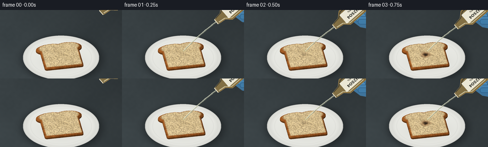
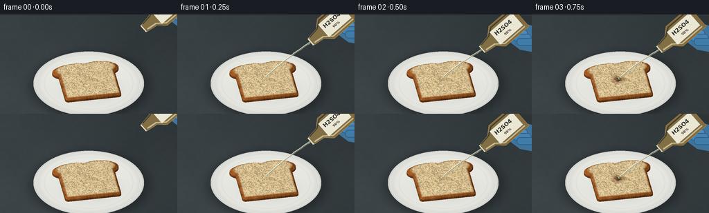
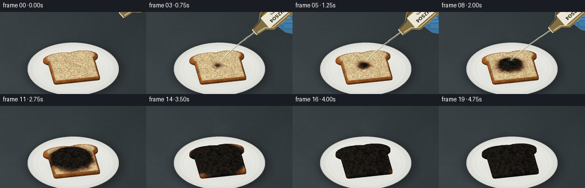
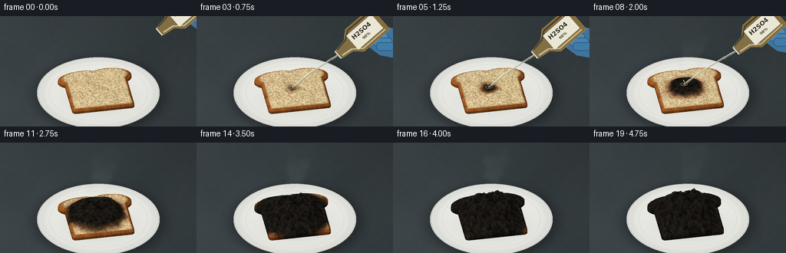

CODING AGENTS AS PIXEL WORLD MODELS
traex/GPT-6.1-Sol · phygen_151
点击播放 · 原生 RGB 像素
逐轮保存的候选
回放视频、检查图与代码变化。
每份候选均可单独播放。实际图片检查记录在下方工具轨迹中。
候选 01播放与检查图
点击播放 · 原生 RGB 像素


展开代码变化
--- 上一保存版本
+++ 本次保存版本
@@ -0,0 +1,257 @@
+from pathlib import Path
+import numpy as np
+from PIL import Image, ImageDraw, ImageFilter, ImageFont
+import cv2
+import artifact_io
+
+ROOT=Path(__file__).resolve().parent
+W,H=256,144
+S=3
+SW,SH=W*S,H*S
+rng=np.random.default_rng(151)
+
+def noise(n, scales):
+ a=np.zeros((n,n),np.float32)
+ for k,weight in scales:
+ v=rng.random((k,k)).astype(np.float32)-.5
+ a+=cv2.resize(v,(n,n),interpolation=cv2.INTER_CUBIC)*weight
+ return a
+
+def smooth(a,b,x):
+ t=np.clip((x-a)/(b-a),0,1)
+ return t*t*(3-2*t)
+
+# A softly illuminated slate lab bench, with a shallow porcelain dish.
+yy,xx=np.mgrid[:SH,:SW].astype(np.float32)
+x,y=xx/S,yy/S
+benchnoise=noise(SW,[(6,4),(55,1.7),(440,1)])[:SH,:]
+illum=1-.19*(x/256)+.08*(y/144)
+base=np.stack([57*illum+benchnoise,65*illum+benchnoise,68*illum+benchnoise],-1)
+# Soft shadows from the plate and bread.
+ell=np.sqrt(((x-130)/81)**2+((y-103)/47)**2)
+shadow=np.exp(-((ell-.94)/.17)**2)*.23
+base*=1-shadow[...,None]
+plate=np.sqrt(((x-128)/80)**2+((y-100)/46.5)**2)
+mask=plate<1
+rim=smooth(.81,.96,plate)
+shade=227+9*(1-plate)-12*rim+5*np.exp(-((plate-.955)/.02)**2)-12*np.exp(-((plate-.985)/.012)**2)
+for c,mul in enumerate([1.015,1.018,.994]):
+ base[...,c]=np.where(mask,shade*mul,base[...,c])
+# Central well and softly rounded rim.
+line=np.exp(-((plate-.80)/.012)**2)*7
+base-=line[...,None]*mask[...,None]
+breadshadow=np.exp(-(((x-131)/42)**2+((y-108)/20)**2))*24
+base-=breadshadow[...,None]
+base=np.clip(base,0,255).astype(np.uint8)
+
+# Bread is a continuous, textured height field with a rounded loaf outline.
+N=800
+U,V=np.meshgrid(np.linspace(-2,2,N,dtype=np.float32),np.linspace(-2,2,N,dtype=np.float32))
+ang=np.deg2rad(-10)
+u=U*np.cos(ang)-V*np.sin(ang)
+v=U*np.sin(ang)+V*np.cos(ang)
+# Rounded rectangular slice with the characteristic curved shoulders of a loaf.
+q1=np.abs(u)-1.21
+q2=np.abs(v+.10)-1.12
+rect=np.hypot(np.maximum(q1,0),np.maximum(q2,0))+np.minimum(np.maximum(q1,q2),0)-.16
+lobe1=np.hypot((u+.55)/1.07,(v-.91)/.57)-1
+lobe2=np.hypot((u-.55)/1.07,(v-.91)/.57)-1
+sd=np.minimum(rect,np.minimum(lobe1,lobe2)*.57)
+inside=sd<0
+dist=-sd
+coarse=noise(N,[(12,1),(35,.6),(100,.25),(400,.12)])
+fine=noise(N,[(70,1),(260,.6),(700,.24)])
+# Tiny irregular air pockets give the pale crumb an open, bread-like grain.
+pits=np.zeros((N,N),np.float32)
+for i in range(1900):
+ pu,pv=rng.uniform(-1.55,1.55),rng.uniform(-1.4,1.45)
+ rad=rng.uniform(.013,.045)
+ cx=int((pu+2)/4*(N-1));cy=int((pv+2)/4*(N-1))
+ rx=max(2,int(rad*N/4));ry=max(2,int(rad*rng.uniform(.65,1.4)*N/4))
+ xa,xb=max(0,cx-3*rx),min(N,cx+3*rx+1)
+ ya,yb=max(0,cy-3*ry),min(N,cy+3*ry+1)
+ py,px=np.mgrid[ya:yb,xa:xb]
+ g=np.exp(-(((px-cx)/rx)**2+((py-cy)/ry)**2)*1.7)*rng.uniform(.35,1)
+ pits[ya:yb,xa:xb]=np.maximum(pits[ya:yb,xa:xb],g)
+crust=1-smooth(.055,.17,dist)
+crumb=np.empty((N,N,3),np.float32)
+for c,val in enumerate([232,207,156]):
+ crumb[...,c]=val+coarse*15+fine*13-pits*[78,75,56][c]
+crustcol=np.stack([155+coarse*28+fine*16,87+coarse*21+fine*12,35+coarse*13+fine*9],-1)
+crumb=crumb*(1-crust[...,None])+crustcol*crust[...,None]
+# Coherent porous carbon structure; broad bubbles expand into a craggy mound.
+lumps=noise(N,[(14,.60),(32,.30),(75,.13)])
+chargrain=noise(N,[(38,.8),(120,.5),(370,.23)])
+reaction_distance=np.hypot((u+.12)/1.05,(v-.06)/.97)+coarse*.095
+font='/usr/share/fonts/truetype/dejavu/DejaVuSans-Bold.ttf'
+
+
+def sample(a,X,Y):
+ if X.shape[-1]>30000:
+ return np.concatenate([sample(a,X[:,i:i+30000],Y[:,i:i+30000]) for i in range(0,X.shape[-1],30000)],axis=1)
+ return cv2.remap(a,((X+2)*(N-1)/4).astype(np.float32),((Y+2)*(N-1)/4).astype(np.float32),cv2.INTER_LINEAR,borderMode=cv2.BORDER_CONSTANT,borderValue=0)
+
+# Ray cast our own analytic geometry. No external renderer is used.
+X=(x-128)/30
+screen=(y-100)/30
+frames=[]
+for frame in range(20):
+ t=frame/4
+ progress=smooth(.45,4.6,t)
+ radius=.06+1.94*progress
+ char=smooth(-.15,.15,radius-reaction_distance)*smooth(.35,.85,t)
+ wet=smooth(-.3,.15,radius+.18-reaction_distance)*smooth(.25,.75,t)
+ rise=smooth(.9,4.75,t)
+ m=np.exp(-((u+.1)/1.07)**4-((v-.02)/1.08)**4)
+ mound=rise*char*m*(.54+lumps*.35+chargrain*.07)
+ edge=smooth(0,.095,dist)
+ height=(.16+.085*edge+.025*coarse+.011*fine-.027*pits +mound)*inside
+ # Crust thickens and curls slightly as the center carbonizes.
+ height+=inside*crust*rise*.055
+ height=height.astype(np.float32)
+ brown=smooth(-.28,.18,radius+.09-reaction_distance)*smooth(.42,.9,t)
+ burned=np.stack([115+fine*15,58+fine*8,22+fine*4],-1)
+ color=crumb*(1-brown[...,None]*.8)+burned*(brown[...,None]*.8)
+ dark=np.stack([28+chargrain*24+fine*6,25+chargrain*22+fine*5,21+chargrain*19+fine*4],-1)-pits[...,None]*11
+ color=color*(1-char[...,None])+dark*char[...,None]
+ # Directional diffuse light plus restrained specular wet sheen.
+ hy,hx=np.gradient(height,4/(N-1))
+ nx,ny,nz=-hx,-hy,np.ones_like(hx)
+ norm=np.sqrt(nx*nx+ny*ny+nz*nz)
+ light=np.clip((nx*-.38+ny*-.46+nz*.80)/norm,0,1)
+ lighting=.48+.61*light
+ color*=lighting[...,None]
+ spec=(light**18)*wet*(1-char*.93)*13
+ color+=spec[...,None]
+ color=np.clip(color,0,255).astype(np.float32)
+ hit=np.zeros((SH,SW),bool)
+ zh=np.zeros((SH,SW),np.float32)
+ # Only rays that can pass through the slice are evaluated.
+ roi=(np.abs(X)<1.85)&(y>43)&(y<137)
+ inds=np.where(roi)
+ xr=X[inds];sr=screen[inds]
+ found=np.zeros(xr.shape,bool)
+ zhit=np.zeros(xr.shape,np.float32)
+ prev=1.25
+ for zz in np.linspace(1.25,.035,100):
+ Yr=(-sr-.8*zz)/.6
+ hh=sample(height,xr[None,:],Yr[None,:])[0]
+ crossed=(hh>=zz)&(~found)
+ if crossed.any():
+ lo=np.full(crossed.sum(),zz,np.float32);hi=np.full(crossed.sum(),prev,np.float32)
+ xc=xr[crossed];sc=sr[crossed]
+ for _ in range(5):
+ mid=(lo+hi)/2
+ yc=(-sc-.8*mid)/.6
+ hm=sample(height,xc[None,:],yc[None,:])[0]
+ under=hm>=mid
+ lo=np.where(under,mid,lo);hi=np.where(under,hi,mid)
+ zhit[crossed]=(lo+hi)/2
+ found[crossed]=True
+ prev=zz
+ hit[inds]=found;zh[inds]=zhit
+ Ys=(-screen-.8*zh)/.6
+ col=sample(color,X,Ys)
+ # Vertical edge below the cut surface, toasted dark brown.
+ edge_sample=sample(dist.astype(np.float32),X,Ys)
+ side=(zh<.16)&hit
+ col[side]*=np.clip(.59+zh[side,None]*2.1,.6,.94)
+ canvas=base.astype(np.float32).copy()
+ canvas[hit]=col[hit]
+ im=Image.fromarray(np.clip(canvas,0,255).astype(np.uint8)).convert('RGBA')
+ # Hot, translucent vapor drifts upwards from the blackened wet area.
+ if frame>=5:
+ vap=Image.new('RGBA',(SW,SH));d=ImageDraw.Draw(vap)
+ strength=smooth(.8,2.3,t)*(1-.30*smooth(3.4,5,t))
+ for k in range(14):
+ phase=(frame*.042+k*.079)%1
+ vx=126+np.sin(k*1.8+phase*4)*8+phase*12
+ vy=83-phase*61-rise*9
+ rr=(4+phase*11)
+ alpha=int(strength*9*(1-phase)**.7)
+ d.ellipse(((vx-rr)*S,(vy-rr*.8)*S,(vx+rr)*S,(vy+rr*.8)*S),fill=(219,226,222,alpha))
+ vap=vap.filter(ImageFilter.GaussianBlur(3.3*S))
+ im=Image.alpha_composite(im,vap)
+ # The incoming reagent bottle is held by a blue nitrile glove.
+ if frame<=10:
+ enter=smooth(0,.42,t)
+ leave=smooth(1.85,2.6,t)
+ cx=219+23*(1-enter)+55*leave
+ cy=10-30*(1-enter)-39*leave
+ a=np.deg2rad(139-9*leave)
+ axis=np.array([np.cos(a),np.sin(a)])
+ perp=np.array([-axis[1],axis[0]])
+ def pt(t0,v0):
+ p=np.array([cx,cy])+axis*t0+perp*v0
+ return tuple(p*S)
+ obj=Image.new('RGBA',(SW,SH));d=ImageDraw.Draw(obj)
+ # Hand behind the glass, gently wrapping around it.
+ hand=[(242,-4),(269,3),(271,41),(244,36),(232,27),(222,17),(223,4)]
+ hand=[((a0+cx-219)*S,(b0+cy-10)*S) for a0,b0 in hand]
+ d.polygon(hand,fill=(63,116,156,255))
+ for j in range(3):
+ qx=229+cx-219+j*5;qy=7+cy-10+j*6
+ d.rounded_rectangle((qx*S,qy*S,(qx+26)*S,(qy+11)*S),radius=5*S,fill=(76-j*6,138-j*7,184-j*8,255),outline=(45,93,132,255),width=S)
+ # Amber borosilicate bottle, exposed open neck and mouth.
+ profile=[(-34,-19),(-34,19),(10,19),(21,9),(36,7),(39,6),(39,-6),(36,-7),(21,-9),(10,-19)]
+ d.polygon([pt(p,q) for p,q in profile],fill=(150,116,56,218),outline=(196,181,139,245))
+ d.polygon([pt(p,q) for p,q in [(-31,-16),(-31,16),(10,16),(19,7),(34,5),(34,-5),(19,-7),(10,-16)]],fill=(179,145,74,158))
+ # Long glass highlights and shaded edges.
+ d.line([pt(-29,-15),pt(9,-15),pt(21,-6),pt(36,-4)],fill=(249,233,182,187),width=2*S)
+ d.line([pt(-30,16),pt(9,16),pt(20,8),pt(36,6)],fill=(73,65,44,194),width=2*S)
+ d.line([pt(39,-6),pt(39,6)],fill=(238,232,207,240),width=2*S)
+ d.line([pt(36,-7),pt(36,7)],fill=(130,128,101,220),width=S)
+ # White reagent label, attached to the bottle rather than the scene.
+ label=Image.new('RGBA',(43*S,24*S),(235,231,213,255));ld=ImageDraw.Draw(label)
+ ld.text((4*S,3*S),'H2SO4',font=ImageFont.truetype(font,8*S),fill=(47,47,40,255))
+ ld.text((14*S,14*S),'98%',font=ImageFont.truetype(font,5*S),fill=(66,62,49,255))
+ # Label long axis aligns with the bottle axis.
+ label=label.rotate(-139,Image.Resampling.BICUBIC,expand=True)
+ loc=pt(-7,0)
+ obj.alpha_composite(label,(int(loc[0]-label.width/2),int(loc[1]-label.height/2)))
+ im=Image.alpha_composite(im,obj)
+ # Continuous viscous, nearly colorless pour to the crumb surface.
+ if 1<=frame<=8:
+ layer=Image.new('RGBA',(SW,SH));dr=ImageDraw.Draw(layer)
+ start=np.array(pt(40,0))/S
+ target=np.array([128+2*np.sin(frame*.5),86-rise*10])
+ coords=[]
+ for k in np.linspace(0,1,45):
+ pos=start*(1-k)+target*k
+ pos[0]-=3*np.sin(np.pi*k)
+ pos[0]+=.25*np.sin(k*31+frame*2)
+ coords.append(tuple(pos*S))
+ dr.line(coords,fill=(218,215,176,145),width=int(3.1*S))
+ dr.line([(p[0]-.7*S,p[1]) for p in coords],fill=(247,250,226,199),width=S)
+ dr.line([(p[0]+.7*S,p[1]) for p in coords],fill=(137,144,124,180),width=S)
+ tx,ty=target
+ dr.ellipse(((tx-5)*S,(ty-1.8)*S,(tx+5)*S,(ty+1.9)*S),outline=(195,184,122,120),width=S)
+ for j in range(4):
+ dx=np.sin(frame*2+j*3)*4;dy=-2-((frame+j)%3)*1.4
+ dr.ellipse(((tx+dx-.55)*S,(ty+dy-.7)*S,(tx+dx+.55)*S,(ty+dy+.7)*S),fill=(232,228,185,155))
+ im=Image.alpha_composite(im,layer)
+ # A few tiny glistening gas bubbles survive on the wet black crumb.
+ if frame>=7:
+ gl=Image.new('RGBA',(SW,SH));dr=ImageDraw.Draw(gl)
+ for j in range(15):
+ bu=-.12+.9*np.sin(j*8.2);bv=.03+.65*np.cos(j*6.3)
+ bz=sample(height,np.array([[bu]],np.float32),np.array([[bv]],np.float32))[0,0]
+ bx=128+bu*30;by=100+30*(-.6*bv-.8*bz)
+ r=.5+.35*((j+frame)%3)
+ alpha=int(35+20*np.sin(frame*.8+j)**2)
+ dr.arc(((bx-r)*S,(by-r*.65)*S,(bx+r)*S,(by+r*.65)*S),195,290,fill=(186,180,155,alpha),width=S)
+ im=Image.alpha_composite(im,gl)
+ im=im.convert('RGB').resize((W,H),Image.Resampling.LANCZOS)
+ frames.append(np.array(im))
+ print(f'frame {frame:02d} generated',flush=True)
+frames=np.stack(frames).astype(np.uint8)
+artifact_io.save(frames,ROOT)
+# A standard RGB MP4 is provided as a convenient standalone video as well.
+try:
+ import imageio.v2 as imageio
+ writer=imageio.get_writer(str(ROOT/'video.mp4'),fps=4,codec='libx264',quality=9,macro_block_size=1)
+ for f in frames: writer.append_data(f)
+ writer.close()
+except ImportError:
+ pass
+print('Saved required RGB artifacts.')
候选 02播放与检查图
点击播放 · 原生 RGB 像素


展开代码变化
--- 上一保存版本
+++ 本次保存版本
@@ -103,7 +103,7 @@
wet=smooth(-.3,.15,radius+.18-reaction_distance)*smooth(.25,.75,t)
rise=smooth(.9,4.75,t)
m=np.exp(-((u+.1)/1.07)**4-((v-.02)/1.08)**4)
- mound=rise*char*m*(.54+lumps*.35+chargrain*.07)
+ mound=rise*char*m*(.87+lumps*.46+chargrain*.10)
edge=smooth(0,.095,dist)
height=(.16+.085*edge+.025*coarse+.011*fine-.027*pits +mound)*inside
# Crust thickens and curls slightly as the center carbonizes.
@@ -132,8 +132,8 @@
xr=X[inds];sr=screen[inds]
found=np.zeros(xr.shape,bool)
zhit=np.zeros(xr.shape,np.float32)
- prev=1.25
- for zz in np.linspace(1.25,.035,100):
+ prev=1.55
+ for zz in np.linspace(1.55,.035,115):
Yr=(-sr-.8*zz)/.6
hh=sample(height,xr[None,:],Yr[None,:])[0]
crossed=(hh>=zz)&(~found)
@@ -166,9 +166,9 @@
for k in range(14):
phase=(frame*.042+k*.079)%1
vx=126+np.sin(k*1.8+phase*4)*8+phase*12
- vy=83-phase*61-rise*9
+ vy=83-phase*61-rise*18
rr=(4+phase*11)
- alpha=int(strength*9*(1-phase)**.7)
+ alpha=int(strength*24*(1-phase)**.7)
d.ellipse(((vx-rr)*S,(vy-rr*.8)*S,(vx+rr)*S,(vy+rr*.8)*S),fill=(219,226,222,alpha))
vap=vap.filter(ImageFilter.GaussianBlur(3.3*S))
im=Image.alpha_composite(im,vap)
@@ -176,8 +176,8 @@
if frame<=10:
enter=smooth(0,.42,t)
leave=smooth(1.85,2.6,t)
- cx=219+23*(1-enter)+55*leave
- cy=10-30*(1-enter)-39*leave
+ cx=214+23*(1-enter)+55*leave
+ cy=25-30*(1-enter)-54*leave
a=np.deg2rad(139-9*leave)
axis=np.array([np.cos(a),np.sin(a)])
perp=np.array([-axis[1],axis[0]])
@@ -206,7 +206,7 @@
ld.text((4*S,3*S),'H2SO4',font=ImageFont.truetype(font,8*S),fill=(47,47,40,255))
ld.text((14*S,14*S),'98%',font=ImageFont.truetype(font,5*S),fill=(66,62,49,255))
# Label long axis aligns with the bottle axis.
- label=label.rotate(-139,Image.Resampling.BICUBIC,expand=True)
+ label=label.rotate(41,Image.Resampling.BICUBIC,expand=True)
loc=pt(-7,0)
obj.alpha_composite(label,(int(loc[0]-label.width/2),int(loc[1]-label.height/2)))
im=Image.alpha_composite(im,obj)
@@ -214,7 +214,7 @@
if 1<=frame<=8:
layer=Image.new('RGBA',(SW,SH));dr=ImageDraw.Draw(layer)
start=np.array(pt(40,0))/S
- target=np.array([128+2*np.sin(frame*.5),86-rise*10])
+ target=np.array([124.5+1.2*np.sin(frame*.5),93-rise*21])
coords=[]
for k in np.linspace(0,1,45):
pos=start*(1-k)+target*k
可观测工具轨迹
实际执行的命令与返回图片。
命令 1exit 0
/bin/bash -lc 'ls -la && cat prompt.txt && cat GENERATION_RULES.md && cat task_spec.json'
命令 2exit 0
/bin/bash -lc 'cat artifact_io.py'
命令 3exit 0
/bin/bash -lc "python - <<'PY' import importlib.util for m in ['numpy','PIL','scipy','cv2','imageio','imageio_ffmpeg']: print(m, bool(importlib.util.find_spec(m))) PY"
命令 4exit 0
/bin/bash -lc 'fc-list | head -5'
命令 5exit 1
/bin/bash -lc "cat > generate.py <<'PY'
from pathlib import Path
import numpy as np
from PIL import Image, ImageDraw, ImageFilter, ImageFont
import cv2
import artifact_io
ROOT=Path(__file__).resolve().parent
W,H=256,144
S=3
SW,SH=W*S,H*S
rng=np.random.default_rng(151)
def noise(n, scales):
a=np.zeros((n,n),np.float32)
for k,weight in scales:
v=rng.random((k,k)).astype(np.float32)-.5
a+=cv2.resize(v,(n,n),interpolation=cv2.INTER_CUBIC)*weight
return a
def smooth(a,b,x):
t=np.clip((x-a)/(b-a),0,1)
return t*t*(3-2*t)
# A softly illuminated slate lab bench, with a shallow porcelain dish.
yy,xx=np.mgrid[:SH,:SW].astype(np.float32)
x,y=xx/S,yy/S
benchnoise=noise(SW,[(6,4),(55,1.7),(440,1)])[:SH,:]
illum=1-.19*(x/256)+.08*(y/144)
base=np.stack([57*illum+benchnoise,65*illum+benchnoise,68*illum+benchnoise],-1)
# Soft shadows from the plate and bread.
ell=np.sqrt(((x-130)/81)**2+((y-103)/47)**2)
shadow=np.exp(-((ell-.94)/.17)**2)*.23
base*=1-shadow[...,None]
plate=np.sqrt(((x-128)/80)**2+((y-100)/46.5)**2)
mask=plate<1
rim=smooth(.81,.96,plate)
shade=227+9*(1-plate)-12*rim+5*np.exp(-((plate-.955)/.02)**2)-12*np.exp(-((plate-.985)/.012)**2)
for c,mul in enumerate([1.015,1.018,.994]):
base[...,c]=np.where(mask,shade*mul,base[...,c])
# Central well and softly rounded rim.
line=np.exp(-((plate-.80)/.012)**2)*7
base-=line[...,None]*mask[...,None]
breadshadow=np.exp(-(((x-131)/42)**2+((y-108)/20)**2))*24
base-=breadshadow[...,None]
base=np.clip(base,0,255).astype(np.uint8)
# Bread is a continuous, textured height field with a rounded loaf outline.
N=800
U,V=np.meshgrid(np.linspace(-2,2,N,dtype=np.float32),np.linspace(-2,2,N,dtype=np.float32))
ang=np.deg2rad(-10)
u=U*np.cos(ang)-V*np.sin(ang)
v=U*np.sin(ang)+V*np.cos(ang)
# Rounded rectangular slice with the characteristic curved shoulders of a loaf.
q1=np.abs(u)-1.21
q2=np.abs(v+.10)-1.12
rect=np.hypot(np.maximum(q1,0),np.maximum(q2,0))+np.minimum(np.maximum(q1,q2),0)-.16
lobe1=np.hypot((u+.55)/1.07,(v-.91)/.57)-1
lobe2=np.hypot((u-.55)/1.07,(v-.91)/.57)-1
sd=np.minimum(rect,np.minimum(lobe1,lobe2)*.57)
inside=sd<0
dist=-sd
coarse=noise(N,[(12,1),(35,.6),(100,.25),(400,.12)])
fine=noise(N,[(70,1),(260,.6),(700,.24)])
# Tiny irregular air pockets give the pale crumb an open, bread-like grain.
pits=np.zeros((N,N),np.float32)
for i in range(1900):
pu,pv=rng.uniform(-1.55,1.55),rng.uniform(-1.4,1.45)
rad=rng.uniform(.013,.045)
cx=int((pu+2)/4*(N-1));cy=int((pv+2)/4*(N-1))
rx=max(2,int(rad*N/4));ry=max(2,int(rad*rng.uniform(.65,1.4)*N/4))
xa,xb=max(0,cx-3*rx),min(N,cx+3*rx+1)
ya,yb=max(0,cy-3*ry),min(N,cy+3*ry+1)
py,px=np.mgrid[ya:yb,xa:xb]
g=np.exp(-(((px-cx)/rx)**2+((py-cy)/ry)**2)*1.7)*rng.uniform(.35,1)
pits[ya:yb,xa:xb]=np.maximum(pits[ya:yb,xa:xb],g)
crust=1-smooth(.055,.17,dist)
crumb=np.empty((N,N,3),np.float32)
for c,val in enumerate([232,207,156]):
crumb[...,c]=val+coarse*15+fine*13-pits*[78,75,56][c]
crustcol=np.stack([155+coarse*28+fine*16,87+coarse*21+fine*12,35+coarse*13+fine*9],-1)
crumb=crumb*(1-crust[...,None])+crustcol*crust[...,None]
# Coherent porous carbon structure; broad bubbles expand into a craggy mound.
lumps=noise(N,[(14,.60),(32,.30),(75,.13)])
chargrain=noise(N,[(38,.8),(120,.5),(370,.23)])
reaction_distance=np.hypot((u+.12)/1.05,(v-.06)/.97)+coarse*.095
font='/usr/share/fonts/truetype/dejavu/DejaVuSans-Bold.ttf'
def sample(a,X,Y):
return cv2.remap(a,((X+2)*(N-1)/4).astype(np.float32),((Y+2)*(N-1)/4).astype(np.float32),cv2.INTER_LINEAR,borderMode=cv2.BORDER_CONSTANT,borderValue=0)
# Ray cast our own analytic geometry. No external renderer is used.
X=(x-128)/30
screen=(y-100)/30
frames=[]
for frame in range(20):
t=frame/4
progress=smooth(.45,4.6,t)
radius=.06+1.94*progress
char=smooth(-.15,.15,radius-reaction_distance)*smooth(.35,.85,t)
wet=smooth(-.3,.15,radius+.18-reaction_distance)*smooth(.25,.75,t)
rise=smooth(.9,4.75,t)
m=np.exp(-((u+.1)/1.07)**4-((v-.02)/1.08)**4)
mound=rise*char*m*(.54+lumps*.35+chargrain*.07)
edge=smooth(0,.095,dist)
height=(.16+.085*edge+.025*coarse+.011*fine-.027*pits +mound)*inside
# Crust thickens and curls slightly as the center carbonizes.
height+=inside*crust*rise*.055
height=height.astype(np.float32)
brown=smooth(-.28,.18,radius+.09-reaction_distance)*smooth(.42,.9,t)
burned=np.stack([115+fine*15,58+fine*8,22+fine*4],-1)
color=crumb*(1-brown[...,None]*.8)+burned*(brown[...,None]*.8)
dark=np.stack([28+chargrain*24+fine*6,25+chargrain*22+fine*5,21+chargrain*19+fine*4],-1)-pits[...,None]*11
color=color*(1-char[...,None])+dark*char[...,None]
# Directional diffuse light plus restrained specular wet sheen.
hy,hx=np.gradient(height,4/(N-1))
nx,ny,nz=-hx,-hy,np.ones_like(hx)
norm=np.sqrt(nx*nx+ny*ny+nz*nz)
light=np.clip((nx*-.38+ny*-.46+nz*.80)/norm,0,1)
lighting=.48+.61*light
color*=lighting[...,None]
spec=(light**18)*wet*(1-char*.93)*13
color+=spec[...,None]
color=np.clip(color,0,255).astype(np.float32)
hit=np.zeros((SH,SW),bool)
zh=np.zeros((SH,SW),np.float32)
# Only rays that can pass through the slice are evaluated.
roi=(np.abs(X)<1.85)&(y>43)&(y<137)
inds=np.where(roi)
xr=X[inds];sr=screen[inds]
found=np.zeros(xr.shape,bool)
zhit=np.zeros(xr.shape,np.float32)
prev=1.25
for zz in np.linspace(1.25,.035,100):
Yr=(-sr-.8*zz)/.6
hh=sample(height,xr[None,:],Yr[None,:])[0]
crossed=(hh>=zz)&(~found)
if crossed.any():
lo=np.full(crossed.sum(),zz,np.float32);hi=np.full(crossed.sum(),prev,np.float32)
xc=xr[crossed];sc=sr[crossed]
for _ in range(5):
mid=(lo+hi)/2
yc=(-sc-.8*mid)/.6
hm=sample(height,xc[None,:],yc[None,:])[0]
under=hm>=mid
lo=np.where(under,mid,lo);hi=np.where(under,hi,mid)
zhit[crossed]=(lo+hi)/2
found[crossed]=True
prev=zz
hit[inds]=found;zh[inds]=zhit
Ys=(-screen-.8*zh)/.6
col=sample(color,X,Ys)
# Vertical edge below the cut surface, toasted dark brown.
edge_sample=sample(dist.astype(np.float32),X,Ys)
side=(zh<.16)&hit
col[side]*=np.clip(.59+zh[side,None]*2.1,.6,.94)
canvas=base.astype(np.float32).copy()
canvas[hit]=col[hit]
im=Image.fromarray(np.clip(canvas,0,255).astype(np.uint8)).convert('RGBA')
# Hot, translucent vapor drifts upwards from the blackened wet area.
if frame>=5:
vap=Image.new('RGBA',(SW,SH));d=ImageDraw.Draw(vap)
strength=smooth(.8,2.3,t)*(1-.30*smooth(3.4,5,t))
for k in range(14):
phase=(frame*.042+k*.079)%1
vx=126+np.sin(k*1.8+phase*4)*8+phase*12
vy=83-phase*61-rise*9
rr=(4+phase*11)
alpha=int(strength*9*(1-phase)**.7)
d.ellipse(((vx-rr)*S,(vy-rr*.8)*S,(vx+rr)*S,(vy+rr*.8)*S),fill=(219,226,222,alpha))
vap=vap.filter(ImageFilter.GaussianBlur(3.3*S))
im=Image.alpha_composite(im,vap)
# The incoming reagent bottle is held by a blue nitrile glove.
if frame<=10:
enter=smooth(0,.42,t)
leave=smooth(1.85,2.6,t)
cx=219+23*(1-enter)+55*leave
cy=10-30*(1-enter)-39*leave
a=np.deg2rad(139-9*leave)
axis=np.array([np.cos(a),np.sin(a)])
perp=np.array([-axis[1],axis[0]])
def pt(t0,v0):
p=np.array([cx,cy])+axis*t0+perp*v0
return tuple(p*S)
obj=Image.new('RGBA',(SW,SH));d=ImageDraw.Draw(obj)
# Hand behind the glass, gently wrapping around it.
hand=[(242,-4),(269,3),(271,41),(244,36),(232,27),(222,17),(223,4)]
hand=[((a0+cx-219)*S,(b0+cy-10)*S) for a0,b0 in hand]
d.polygon(hand,fill=(63,116,156,255))
for j in range(3):
qx=229+cx-219+j*5;qy=7+cy-10+j*6
d.rounded_rectangle((qx*S,qy*S,(qx+26)*S,(qy+11)*S),radius=5*S,fill=(76-j*6,138-j*7,184-j*8,255),outline=(45,93,132,255),width=S)
# Amber borosilicate bottle, exposed open neck and mouth.
profile=[(-34,-19),(-34,19),(10,19),(21,9),(36,7),(39,6),(39,-6),(36,-7),(21,-9),(10,-19)]
d.polygon([pt(p,q) for p,q in profile],fill=(150,116,56,218),outline=(196,181,139,245))
d.polygon([pt(p,q) for p,q in [(-31,-16),(-31,16),(10,16),(19,7),(34,5),(34,-5),(19,-7),(10,-16)]],fill=(179,145,74,158))
# Long glass highlights and shaded edges.
d.line([pt(-29,-15),pt(9,-15),pt(21,-6),pt(36,-4)],fill=(249,233,182,187),width=2*S)
d.line([pt(-30,16),pt(9,16),pt(20,8),pt(36,6)],fill=(73,65,44,194),width=2*S)
d.line([pt(39,-6),pt(39,6)],fill=(238,232,207,240),width=2*S)
d.line([pt(36,-7),pt(36,7)],fill=(130,128,101,220),width=S)
# White reagent label, attached to the bottle rather than the scene.
label=Image.new('RGBA',(43*S,24*S),(235,231,213,255));ld=ImageDraw.Draw(label)
ld.text((4*S,3*S),'H2SO4',font=ImageFont.truetype(font,8*S),fill=(47,47,40,255))
ld.text((14*S,14*S),'98%',font=ImageFont.truetype(font,5*S),fill=(66,62,49,255))
# Label long axis aligns with the bottle axis.
label=label.rotate(-139,Image.Resampling.BICUBIC,expand=True)
loc=pt(-7,0)
obj.alpha_composite(label,(int(loc[0]-label.width/2),int(loc[1]-label.height/2)))
im=Image.alpha_composite(im,obj)
# Continuous viscous, nearly colorless pour to the crumb surface.
if 1<=frame<=8:
layer=Image.new('RGBA',(SW,SH));dr=ImageDraw.Draw(layer)
start=np.array(pt(40,0))/S
target=np.array([128+2*np.sin(frame*.5),86-rise*10])
coords=[]
for k in np.linspace(0,1,45):
pos=start*(1-k)+target*k
pos[0]-=3*np.sin(np.pi*k)
pos[0]+=.25*np.sin(k*31+frame*2)
coords.append(tuple(pos*S))
dr.line(coords,fill=(218,215,176,145),width=int(3.1*S))
dr.line([(p[0]-.7*S,p[1]) for p in coords],fill=(247,250,226,199),width=S)
dr.line([(p[0]+.7*S,p[1]) for p in coords],fill=(137,144,124,180),width=S)
tx,ty=target
dr.ellipse(((tx-5)*S,(ty-1.8)*S,(tx+5)*S,(ty+1.9)*S),outline=(195,184,122,120),width=S)
for j in range(4):
dx=np.sin(frame*2+j*3)*4;dy=-2-((frame+j)%3)*1.4
dr.ellipse(((tx+dx-.55)*S,(ty+dy-.7)*S,(tx+dx+.55)*S,(ty+dy+.7)*S),fill=(232,228,185,155))
im=Image.alpha_composite(im,layer)
# A few tiny glistening gas bubbles survive on the wet black crumb.
if frame>=7:
gl=Image.new('RGBA',(SW,SH));dr=ImageDraw.Draw(gl)
for j in range(15):
bu=-.12+.9*np.sin(j*8.2);bv=.03+.65*np.cos(j*6.3)
bz=sample(height,np.array([[bu]],np.float32),np.array([[bv]],np.float32))[0,0]
bx=128+bu*30;by=100+30*(-.6*bv-.8*bz)
r=.5+.35*((j+frame)%3)
alpha=int(35+20*np.sin(frame*.8+j)**2)
dr.arc(((bx-r)*S,(by-r*.65)*S,(bx+r)*S,(by+r*.65)*S),195,290,fill=(186,180,155,alpha),width=S)
im=Image.alpha_composite(im,gl)
im=im.convert('RGB').resize((W,H),Image.Resampling.LANCZOS)
frames.append(np.array(im))
print(f'frame {frame:02d} generated',flush=True)
frames=np.stack(frames).astype(np.uint8)
artifact_io.save(frames,ROOT)
# A standard RGB MP4 is provided as a convenient standalone video as well.
try:
import imageio.v2 as imageio
writer=imageio.get_writer(str(ROOT/'video.mp4'),fps=4,codec='libx264',quality=9,macro_block_size=1)
for f in frames: writer.append_data(f)
writer.close()
except ImportError:
pass
print('Saved required RGB artifacts.')
PY
OPENBLAS_NUM_THREADS=1 python generate.py"命令 6exit 0
/bin/bash -lc 'OPENBLAS_NUM_THREADS=1 python generate.py'
命令 7exit 0
/bin/bash -lc 'OPENBLAS_NUM_THREADS=1 python generate.py'
视觉工具实际返回图片 1

视觉工具实际返回图片 2

保存候选 2 份；完成命令 7 次；可验证图片返回 2 张。原始 API 响应与完整日志保留在本地。